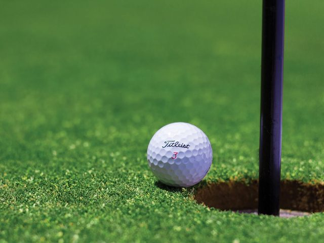
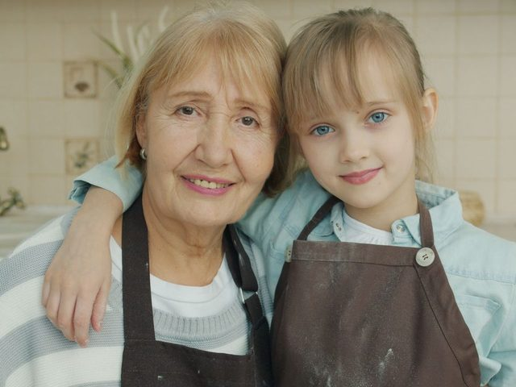
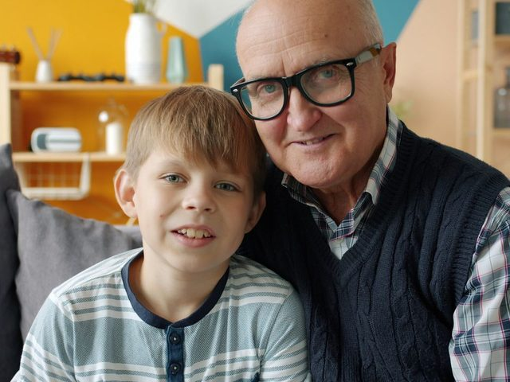
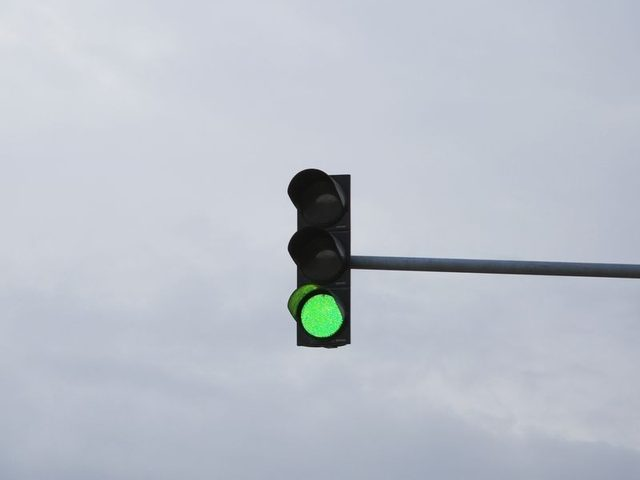
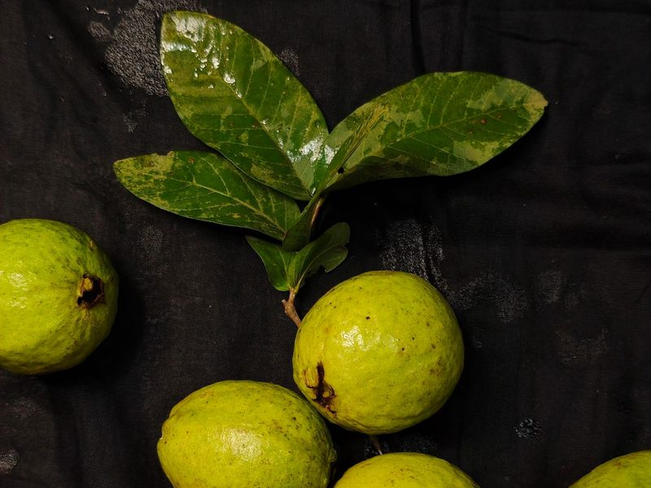
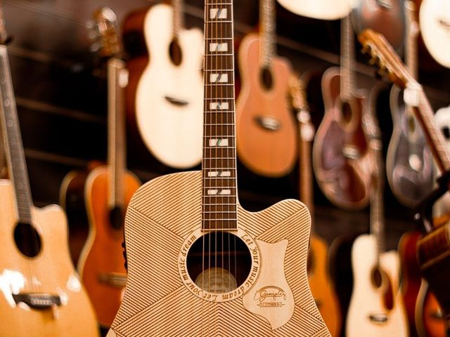

VOCABULARY · WORD UP 單字複習 UNIT 22
G-II．G 開頭（二）
WORD UP「G-II」的 33 個字（golden 到 gym）。紅色＝要複習，藍色標籤＝WORD UP 標熟記、還要在這裡考對。
共 33 個單字．點 🔊 聽發音
1goldenadj.
金色的；金的
She has golden hair.她有一頭金髮。

2golfn.
高爾夫球
play golf
My uncle plays golf on weekends.我叔叔週末打高爾夫球。
3goodadj.
好的
比較級 better、最高級 best；be good at 擅長
She is good at math.她擅長數學。
4good-byeinterj.
再見
= goodbye／bye
Say good-bye to your friends.跟你的朋友說再見。

5goosen.
鵝
複數 geese
There are three geese on the farm.農場上有三隻鵝。

6governmentn.
政府
The government built a new park.政府蓋了一座新公園。
7graden.
年級；成績
in the seventh grade 七年級
I'm in the eighth grade.我讀八年級。

8gramn.
公克
縮寫 g
I need 200 grams of sugar.我需要 200 公克的糖。
9grandadj.
雄偉的；盛大的
We stayed at a grand hotel.我們住在一家豪華的飯店。

10granddaughtern.
孫女；外孫女
Grandpa loves his granddaughter.爺爺很疼他的孫女。
11grandfathern.
祖父；外祖父
= grandpa
My grandfather is eighty.我爺爺八十歲。
12grandmothern.
祖母；外祖母
= grandma
My grandmother tells great stories.我奶奶很會說故事。

13grandsonn.
孫子；外孫
Her grandson is a doctor.她的孫子是醫生。

14grapen.
葡萄
I bought a bunch of grapes.我買了一串葡萄。
15grassn.
草；草地
不可數
Keep off the grass.請勿踐踏草地。

16grayadj./n.
灰色的；灰色
英式 grey
The sky is gray today.今天天空灰灰的。
17greatadj.
很棒的；偉大的
That's a great idea!那是個好主意！

18greedyadj.
貪心的
Don't be greedy. Share with others.不要貪心，跟別人分享。

19greenadj./n.
綠色的；綠色
The traffic light turned green.紅綠燈變綠燈了。
20greetv.
問候；迎接
greeting 問候（名詞）
The teacher greeted us at the door.老師在門口迎接我們。

21groundn.
地面；場地
on the ground 在地上
The ball fell to the ground.球掉到地上。

22groupn.
團體；組
in groups 分組
We worked in groups of four.我們四人一組。

23growv.
生長；種植；變得
三態 grow-grew-grown；grow up 長大
What do you want to be when you grow up?你長大想做什麼？
24growthn.
成長
Milk is good for children's growth.牛奶對兒童的成長有益。

25guardn./v.
警衛；守衛
The guard stands at the gate.警衛站在大門口。

26guavan.
芭樂
Guavas are popular in Taiwan.芭樂在台灣很受歡迎。
27guessv./n.
猜
Guess what! 你猜怎麼著
Guess what! I won the prize.你猜怎麼著！我得獎了。
28guestn.
客人
host 主人
We have guests for dinner tonight.我們今晚有客人來吃晚餐。

29guiden./v.
導遊；引導
tour guide 導遊
Our tour guide speaks three languages.我們的導遊會說三種語言。

30guitarn.
吉他
play the guitar
He plays the guitar very well.他吉他彈得很好。
31gunn.
槍
The police officer has a gun.那位警察有配槍。

32guyn.
傢伙；人
you guys 你們
He is a nice guy.他是個好人。

33gymn.
體育館；健身房
We have PE class in the gym.我們在體育館上體育課。
FOCUS
重點整理
| 說法 | 中文 | 例子 |
|---|---|---|
| be good at | 擅長 | be good at drawing |
| grow up | 長大 | I grew up in Tainan. |
| grow / growth | 生長（動詞）／ 成長（名詞） | Plants grow. ／ fast growth |
| guest / guess | 客人 ／ 猜 | invite guests ／ guess the answer |
| goose → geese | 鵝的複數 | two geese |
| grandfather / grandson | 祖父 ／ 孫子 | my grandfather and his grandson |
| in the + 序數 + grade | 讀幾年級 | in the seventh grade |
good-better-best：good 的比較級 better、最高級 best。